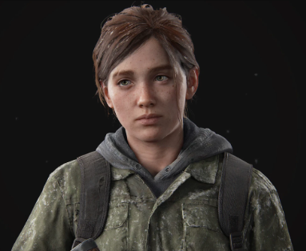

ProtagonistaEllie Williams
Agora com 19 anos, Ellie vive em Jackson com Joel. Após um evento traumático, ela embarca em uma jornada implacável de vingança, levada pelo ódio e pela dor. Sua busca a força a questionar os limites da moralidade e o preço da violência.